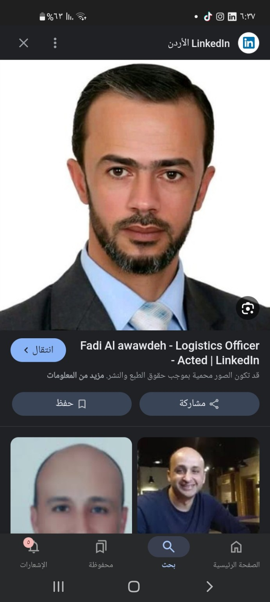
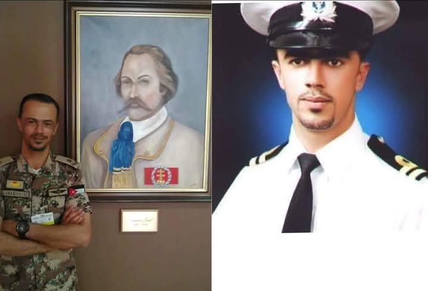

In honor of a dedicated father and a professional logistics officer


Fadi Al Awawdeh is a dedicated logistics officer currently working with ACTED in Irbid, Jordan. With years of experience in humanitarian logistics, including roles at the Norwegian Refugee Council and the Jordanian Armed Forces, Fadi has consistently shown excellence, leadership, and dedication. He holds a degree from Mutah University and has received training at the Britannia Royal Naval College in Dartmouth. He is a proud father of four children and resides in Kfaryouba, Irbid. Fadi concluded his professional career in late 2024.
فادي العوادده هو ضابط لوجستي متميز عمل حاليًا مع منظمة ACTED في إربد، الأردن. يتمتع بخبرة طويلة في المجال الإنساني واللوجستي، بما في ذلك عمله مع المجلس النرويجي للاجئين والقوات المسلحة الأردنية. فادي معروف بكفاءته وقيادته والتزامه في عمله. يحمل شهادة من جامعة مؤتة، وتلقى تدريبه في الكلية الملكية البحرية في دارتموث. وهو أب لأربعة أطفال، ويقيم في بلدة كفريوبا في محافظة إربد. وقد أنهى مسيرته المهنية في أواخر عام 2024.